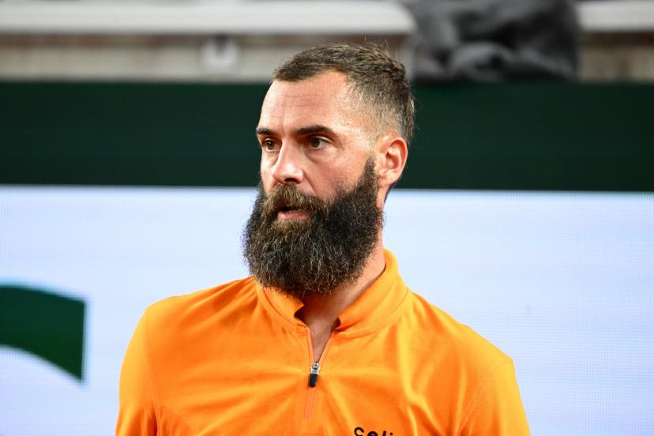

À propos de moi
🎾 Bonjour, je m'appelle François !
Bienvenue sur mon site dédié au tennis, une passion qui m'anime depuis maintenant 6 ans. Avant de prendre une raquette, j'étais déjà un spectateur assidu, captivé par les tournois du Grand Chelem comme Roland-Garros. Mais aujourd'hui, je vis le tennis de l'intérieur en tant que joueur au club de Coutances, tout en continuant à suivre le circuit professionnel, y compris les tournois secondaires qui révèlent les futurs champions.
💭 Ce qui me fascine dans le tennis
Ce que j'aime le plus dans ce sport, c'est l'aspect mental. Le tennis est autant un combat psychologique qu'un duel physique. Chaque point est une bataille, chaque match une histoire. Mais au-delà du mental, je suis également passionné par la technique pure : les effets, le lift, le slice... Ces subtilités qui font toute la différence et qui sont si complexes à maîtriser.
🏆 Mon idole : Rafael Nadal

Comme beaucoup de passionnés, mon joueur préféré est Rafael Nadal. Comment ne pas admirer un champion qui a remporté 22 titres du Grand Chelem ? Mais au-delà des chiffres impressionnants, c'est son mental d'acier qui me fascine. Sa capacité à ne jamais abandonner, à se battre sur chaque balle, est une véritable source d'inspiration. Et bien sûr, son lift dévastateur, particulièrement sur terre battue, reste une signature inégalée dans l'histoire du tennis.
😄 Une rencontre inoubliable
Je me suis rendu plusieurs fois au Challenger de Cherbourg, un tournoi ATP qui accueille des joueurs autour du top 200 mondial – déjà un niveau exceptionnel ! Lors d'une édition, alors que je regardais un match captivant, j'ai eu une envie pressante d'aller aux toilettes. Et là, surprise totale : je me retrouve aux urinoirs à côté de... Benoît Paire (ex-17e mondial ATP) ! Un moment surréaliste que je n'oublierai jamais. Qui aurait cru qu'on pouvait croiser un joueur pro dans un contexte aussi... naturel ? 😅
🌐 Pourquoi ce site ?
J'ai créé ce site pour partager ma passion avec d'autres amateurs de tennis. Que vous soyez joueur débutant, spectateur curieux ou fan inconditionnel, j'espère que vous trouverez ici des informations intéressantes sur les règles, l'histoire, et les grands joueurs qui ont marqué ce sport magnifique.